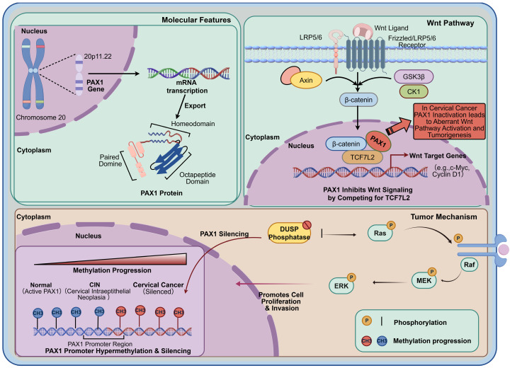
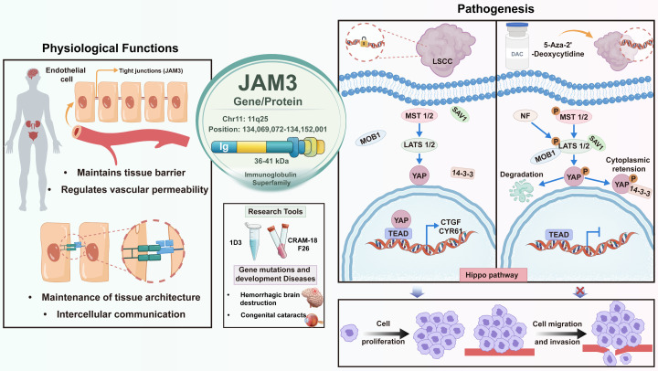

2Dual-Gene Mechanism — Key Figures

Fig. 1 PAX1 inhibits Wnt by competing for TCF7L2 (PIASy); hypermethylation releases inhibition → proliferation & invasion.

Fig. 2 JAM3 maintains tissue barriers; silencing → EMT via HIF-1α/VEGFA → migration & invasion.
- Both genes: hypermethylated in cervical adenocarcinoma — objective dual-gene readout.
1Why Adenocarcinoma Is Missed
- Hidden site: endocervical columnar origin — early lesions rarely visible to cytology/colposcopy.
- HPV gap: ~15% of CA are HPV-negative; HR-HPV PPV low in adenocarcinoma.
- Outcome: high recurrence/metastasis after treatment; poor overall prognosis.
3Mechanism Interpretation
PAX1 · tumor suppressor
Wnt pathway brake
Competes for TCF7L2 (PIASy) → inhibits β-catenin; silencing releases Wnt & EGF/MAPK.
JAM3 · adhesion molecule
Barrier / EMT
Maintains barriers & permeability; silencing → EMT via HIF-1α/VEGFA → metastasis.
- Severity link: methylation rises normal → LSIL → HSIL → cancer.
- Readout: ΔCt PAX1 ≤ 6.6 or ΔCt JAM3 ≤ 10.0.
4Clinical Roles in CA Management
1
Screening sensitivity & specificity
Improves early CA detection over TCT / HPV alone.
2
hrHPV+ reflex triage
Precise risk stratification for HPV-positive women.
3
Cytologically abnormal cases
Compensates morphological diagnostic uncertainty.
4
Dynamic risk & prognosis
Quantitative stratification — from qualitative to quantitative management.
5
Personalized treatment
Epigenetic-based navigation for therapy decisions.
ΔCt PAX1 ≤ 6.6
ΔCt JAM3 ≤ 10.0
ΔCt JAM3 ≤ 10.0
Dual-gene positive readout
either gene positive → high-risk signal for CA / CIN2+
either gene positive → high-risk signal for CA / CIN2+